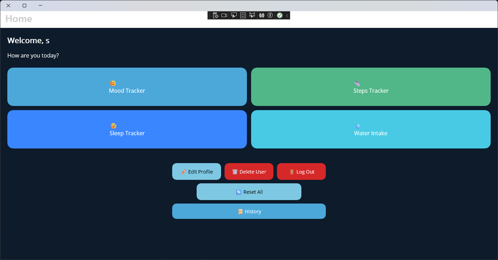
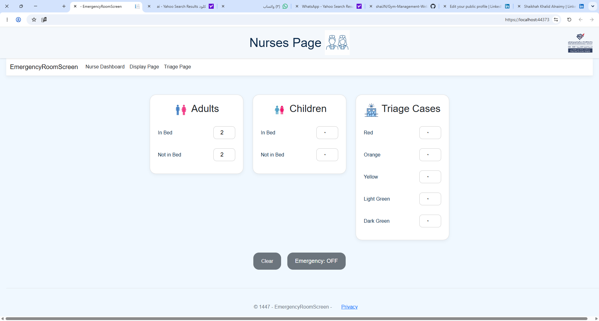
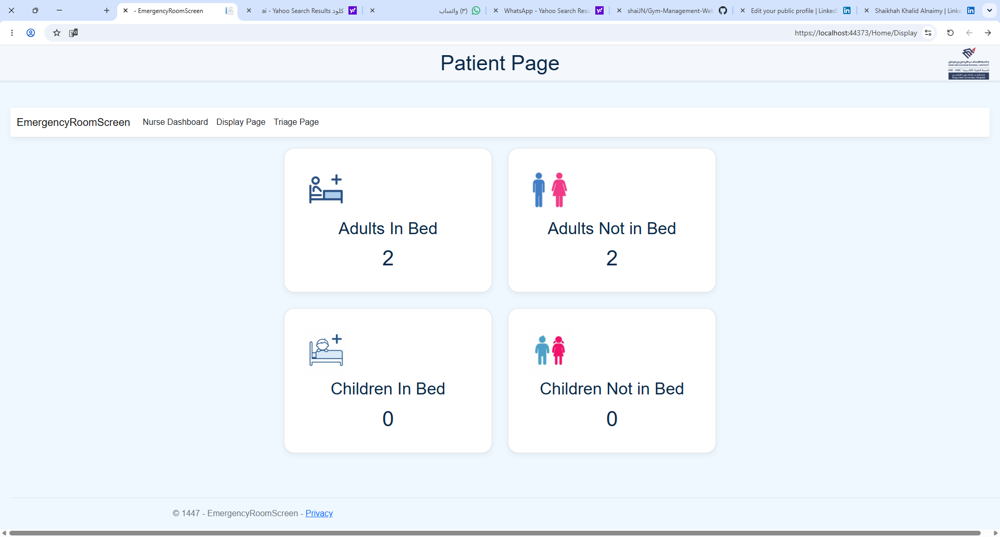
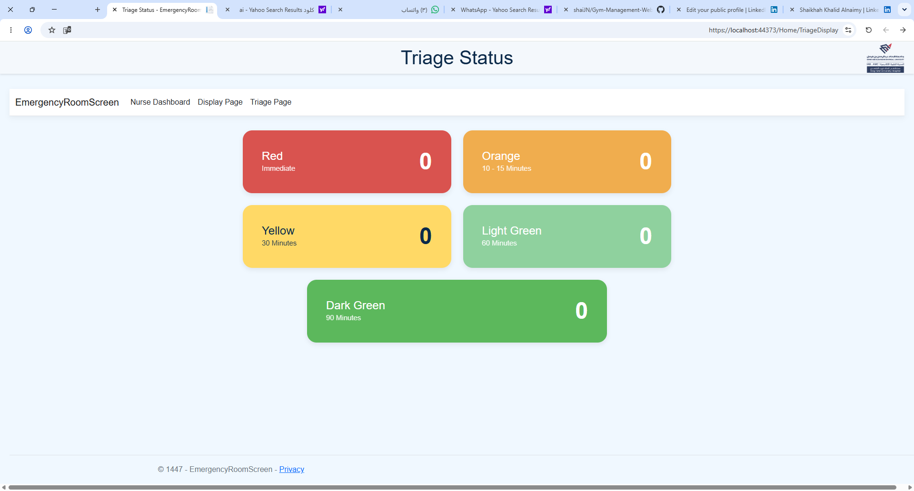
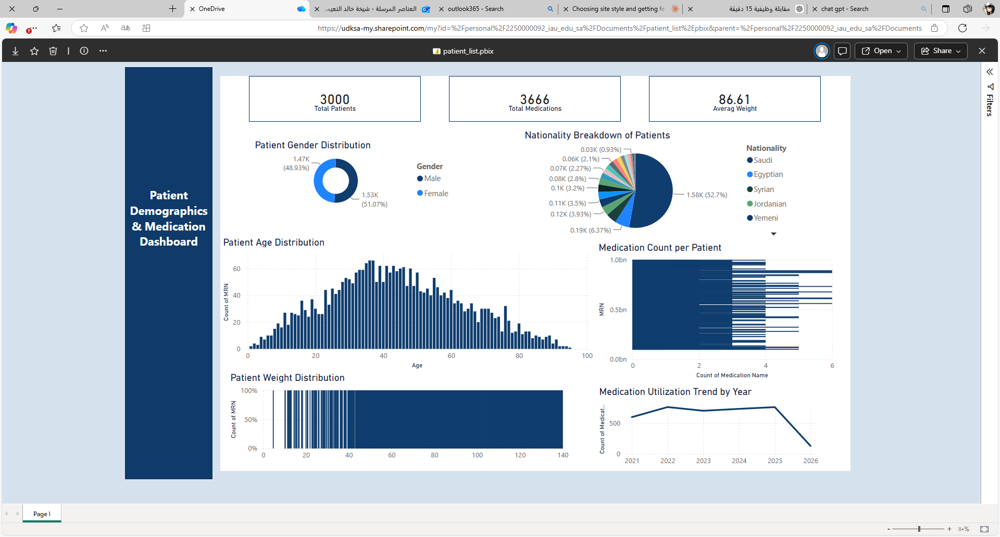

I'm a Diploma graduate in Smart Device Applications and Programming from Imam Abdulrahman Bin Faisal University, with hands-on experience building software across mobile, web, and data platforms. Through practical training at King Fahd University Hospital in Al Khobar, I worked on real healthcare technology projects spanning automation, dashboard reporting, and patient-facing systems.
My work covers mobile applications, web applications, automation workflows, interactive dashboards, and chatbot solutions. I'm driven by a genuine interest in software development, artificial intelligence, and automation — and by the challenge of turning everyday workflow problems into solutions that save time and improve people's experience.
I bring creative problem-solving, attention to detail, and a self-driven approach to learning new tools and technologies. I take initiative, lead when needed, and adapt quickly to new environments — qualities shaped by working in a fast-paced hospital setting.
A cross-platform mobile health-tracking app that helps users build healthier habits by logging water intake, sleep patterns, mood, and daily step count in one place.

A two-part healthcare monitoring system: nurses log adult and pediatric patient counts in beds or waiting areas, with the data displayed in real time on an emergency department screen to improve visibility and workflow management.



A web-based platform for gym members to register, sign in, manage their personal information, and book fitness classes through a clean, user-friendly interface.
An interactive Power BI dashboard surfacing healthcare insights — patient demographics, weight distribution, nationality breakdown, and medication utilization trends — to support data-driven decisions.

An automated workflow that pulls doctor and report details from Excel and sends reports by email. Staff upload files to SharePoint and distribute reports with a single click, cutting manual effort significantly.
A Python-based chatbot that helps patients check appointment availability using a patient ID or medical record number, view clinic schedules, get answers to common questions, and find contact information.
Contributed to software development, automation, dashboard reporting, and healthcare systems projects. Worked hands-on with Power Automate, Power BI, and SharePoint to streamline administrative workflows, and helped build a real-time emergency department display system as part of broader process-improvement initiatives.
I'm currently looking for Junior Software Developer or Full Stack Developer roles where I can keep building practical, user-focused software. Feel free to reach out — I'd love to hear from you.